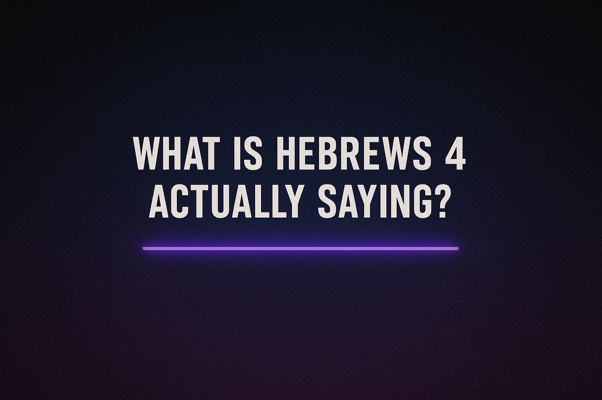

The True Sabbath Hebrews 4
The true Sabbath isn’t a day—it’s a person.
Thus the heavens and the earth were completed, and all their hosts. 2 And [a]on the seventh day God completed His work which He had done, and He rested on the seventh day from all His work which He had done. 3 Then God blessed the seventh day and sanctified it, because on it He rested from all His work which God had created [b]in making it.- Genesis 2:1-3
When God “rested” on the seventh day in Genesis 2:2, He never went back to creating. That rest symbolized completion—and it’s ongoing.
Jesus said:
“Come to Me, all [a]who are weary and heavy-laden, and I will give you rest.”-Matthew 11:28
God's Sabbath rest is eternal, and believers are invited into it by faith in Christ—not by keeping a day of the week.
So there remains a Sabbath rest for the people of God. For the one who has entered His rest has himself also rested from his works, as God did from His-Hebrews 4:9-10
This “rest” is about ceasing from works-based righteousness and trusting in the finished work of Christ.
Hebrews 4 – Full Context and Commentary
Hebrews 4:1–2 — A Warning to Not Miss God’s Rest
“Therefore, while the promise of entering his rest still stands, let us fear lest any of you should seem to have failed to reach it. For good news came to us just as to them, but the message they heard did not benefit them, because they were not united by faith with those who listened.”
- “Them” = the Israelites in the wilderness (Hebrews 3).
- God promised them rest in the Promised Land, but they died in the desert because of unbelief.
- The writer is saying: Don't repeat their mistake. God's rest is still available, but it's only entered by faith.
Context:
Hebrews 4:3–5 — God’s Rest Began at Creation and Still Exists
“For we who have believed enter that rest… although his works were finished from the foundation of the world. For he has somewhere spoken of the seventh day in this way: ‘And God rested on the seventh day from all his works.’”
- God’s rest on the seventh day (Genesis 2:2) is ongoing—it was never reversed or ended
- This eternal rest is what we are called to enter—not just a land or a day, but communion with God through Christ.
Meaning:
Hebrews 4:6–10 — Sabbath Rest Fulfilled in Christ
“So then, there remains a Sabbath rest for the people of God... for whoever has entered God’s rest has also rested from his works as God did from his.”
- “Sabbath rest” here (Greek: sabbatismos) is not about a Saturday commandment.
- It's about ceasing from your own works—your efforts to save yourself—and resting in Christ’s finished work.
- Just like God rested after creation, believers rest from spiritual labor once they enter Christ’s rest.
Key Insight:
Hebrews 4:14–16 — Jesus, Our High Priest and Source of Rest
“Since then we have a great high priest who has passed through the heavens, Jesus, the Son of God, let us hold fast our confession… Let us then with confidence draw near to the throne of grace, that we may receive mercy and find grace to help in time of need.”
- Jesus is the means by which we enter God’s eternal rest.
- Because He is both God and man, and sinless, we can come boldly to Him—not through works or law, but by grace through faith.
Climax:
| Theme | Meaning |
|---|---|
| God’s Rest | Ongoing since creation, eternal, available now. |
| Sabbath | A shadow; Christ is the true fulfillment. |
| Faith vs Works | Only faith grants rest—works will keep you outside. |
| Warning | Don’t harden your heart like Israel in the wilderness. |
| Jesus | Our High Priest who makes rest accessible to us. |
This chapter destroys the idea that Christians must keep a weekly Sabbath to enter God’s favor. Instead, it reveals that the real Sabbath is faith in Christ, and His finished work, which gives us eternal rest with God.
What Did the Early Church Fathers Say About the Sabbath?
☦ Ignatius of Antioch (c. 110 AD)
“Those who were brought up in the ancient order of things have come to the possession of a new hope, no longer observing the Sabbath, but living in observance of the Lord’s Day…”
— Letter to the Magnesians, Ch. 9
☦ Justin Martyr (c. 150 AD)
“The new law requires you to keep perpetual Sabbath... not idly for one day.”
— Dialogue with Trypho, Ch. 12 & 18
☦ Irenaeus of Lyons (c. 180 AD)
“The Sabbaths taught that we should continue day by day in God’s service.”
— Against Heresies, Book IV, Ch. 16
☦ Tertullian (c. 200 AD)
“We Christians have nothing to do with the Sabbath or other Jewish festivals...”
— On Idolatry, Ch. 14
☦ Origen (c. 250 AD)
“The old observance of the Sabbath has disappeared.”
— Homilies on Exodus 5.4
| Church Father | Sabbath View | Day of Worship |
|---|---|---|
| Ignatius | Not binding | Sunday (Lord’s Day) |
| Justin Martyr | Shadow of Christ | Sunday |
| Irenaeus | Spiritually fulfilled | Sunday |
| Tertullian | Obsolete | Sunday |
| Origen | Replaced by resurrection day | Sunday |